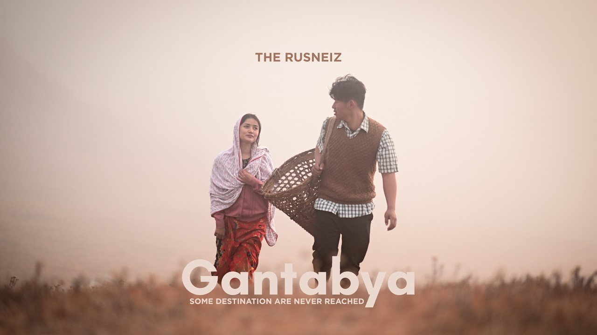
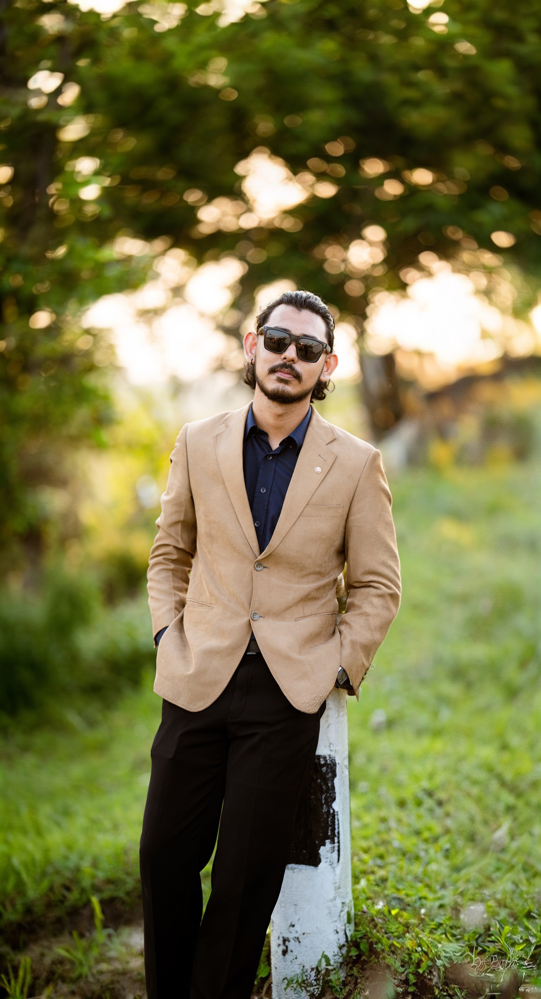

PHOTOGRAPHER / VISUAL STORYTELLER
I photograph
stories
wherever I find them.
Weddings, streets, journeys, cultural celebrations and the quiet moments between them.
Explore the work ↘SCROLL TO EXPLORE ↓
PHOTOGRAPHY
Frames that
remember.
From honest wedding moments to the energy of the street, I look for photographs that feel lived—not staged.
VISUAL WORKS
Beyond the
still frame.
Music videos, moving images and visual stories—built around atmosphere, rhythm and emotion.
DESIGNS
Visuals for the
digital world.
Thumbnail design, social graphics and visual assets created to make ideas clearer—and impossible to scroll past.

ABOUT
Hi, I'm
Siddhartha.
I don't just photograph what happens, I photograph how it feels.
I’ve always believed that the best photographs are the ones you can truly feel.
Whether it’s the quiet intimacy of a wedding, the vibrant energy of a cultural festival, or a fleeting moment on the street, I am drawn to stories that connect us to our roots.
Growing up surrounded by the richness of Newa culture, I developed a deep respect for tradition, community, and the beauty of unscripted moments. When I pick up my camera, I'm not just looking for a perfect pose or a pretty background, I'm looking for authenticity.
My approach blends cinematic visuals with raw, honest emotion. Long after the day has passed, I want you to look back at your photos and not just remember what happened, but remember exactly how it felt.
MY GEAR
-
SONY ALPHA 7 IV
Sigma 24-70mm f/2.8 DG DN II
Sigma 85mm f/1.4
-
NIKON Z5
NIKKOR 85mm f/1.4
CONTACT
Have a story
in mind?
For photography, visual work, collaborations or design projects,
OR
If you wanna Hire a Free Lance Photographer,let's talk.